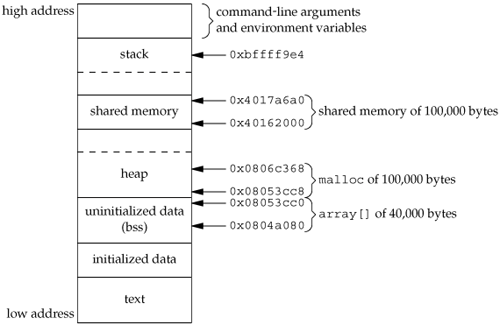

15.9. Shared MemoryShared memory allows two or more processes to share a given region of memory. This is the fastest form of IPC, because the data does not need to be copied between the client and the server. The only trick in using shared memory is synchronizing access to a given region among multiple processes. If the server is placing data into a shared memory region, the client shouldn't try to access the data until the server is done. Often, semaphores are used to synchronize shared memory access. (But as we saw at the end of the previous section, record locking can also be used.)
The kernel maintains a structure with at least the following members for each shared memory segment:
struct shmid_ds {
struct ipc_perm shm_perm; /* see Section 15.6.2 */
size_t shm_segsz; /* size of segment in bytes */
pid_t shm_lpid; /* pid of last shmop() */
pid_t shm_cpid; /* pid of creator */
shmatt_t shm_nattch; /* number of current attaches */
time_t shm_atime; /* last-attach time */
time_t shm_dtime; /* last-detach time */
time_t shm_ctime; /* last-change time */
.
.
.
};
(Each implementation adds other structure members as needed to support shared memory segments.) The type shmatt_t is defined to be an unsigned integer at least as large as an unsigned short. Figure 15.30 lists the system limits (Section 15.6.3) that affect shared memory.
The first function called is usually shmget, to obtain a shared memory identifier.
In Section 15.6.1, we described the rules for converting the key into an identifier and whether a new segment is created or an existing segment is referenced. When a new segment is created, the following members of the shmid_ds structure are initialized.
The size parameter is the size of the shared memory segment in bytes. Implementations will usually round up the size to a multiple of the system's page size, but if an application specifies size as a value other than an integral multiple of the system's page size, the remainder of the last page will be unavailable for use. If a new segment is being created (typically in the server), we must specify its size. If we are referencing an existing segment (a client), we can specify size as 0. When a new segment is created, the contents of the segment are initialized with zeros. The shmctl function is the catchall for various shared memory operations.
The cmd argument specifies one of the following five commands to be performed, on the segment specified by shmid.
Two additional commands are provided by Linux and Solaris, but are not part of the Single UNIX Specification.
Once a shared memory segment has been created, a process attaches it to its address space by calling shmat.
The address in the calling process at which the segment is attached depends on the addr argument and whether the SHM_RND bit is specified in flag.
Unless we plan to run the application on only a single type of hardware (which is highly unlikely today), we should not specify the address where the segment is to be attached. Instead, we should specify an addr of 0 and let the system choose the address. If the SHM_RDONLY bit is specified in flag, the segment is attached read-only. Otherwise, the segment is attached readwrite. The value returned by shmat is the address at which the segment is attached, or 1 if an error occurred. If shmat succeeds, the kernel will increment the shm_nattch counter in the shmid_ds structure associated with the shared memory segment. When we're done with a shared memory segment, we call shmdt to detach it. Note that this does not remove the identifier and its associated data structure from the system. The identifier remains in existence until some process (often a server) specifically removes it by calling shmctl with a command of IPC_RMID.
The addr argument is the value that was returned by a previous call to shmat. If successful, shmdt will decrement the shm_nattch counter in the associated shmid_ds structure. ExampleWhere a kernel places shared memory segments that are attached with an address of 0 is highly system dependent. Figure 15.31 shows a program that prints some information on where one particular system places various types of data. Running this program on an Intel-based Linux system gives us the following output:
$ ./a.out
array[] from 804a080 to 8053cc0
stack around bffff9e4
malloced from 8053cc8 to 806c368
shared memory attached from 40162000 to 4017a6a0
Figure 15.32 shows a picture of this, similar to what we said was a typical memory layout in Figure 7.6. Note that the shared memory segment is placed well below the stack. Figure 15.31. Print where various types of data are stored
#include "apue.h"
#include <sys/shm.h>
#define ARRAY_SIZE 40000
#define MALLOC_SIZE 100000
#define SHM_SIZE 100000
#define SHM_MODE 0600 /* user read/write */
char array[ARRAY_SIZE]; /* uninitialized data = bss */
int
main(void)
{
int shmid;
char *ptr, *shmptr;
printf("array[] from %lx to %lx\n", (unsigned long)&array[0],
(unsigned long)&array[ARRAY_SIZE]);
printf("stack around %lx\n", (unsigned long)&shmid);
if ((ptr = malloc(MALLOC_SIZE)) == NULL)
err_sys("malloc error");
printf("malloced from %lx to %lx\n", (unsigned long)ptr,
(unsigned long)ptr+MALLOC_SIZE);
if ((shmid = shmget(IPC_PRIVATE, SHM_SIZE, SHM_MODE)) < 0)
err_sys("shmget error");
if ((shmptr = shmat(shmid, 0, 0)) == (void *)-1)
err_sys("shmat error");
printf("shared memory attached from %lx to %lx\n",
(unsigned long)shmptr, (unsigned long)shmptr+SHM_SIZE);
if (shmctl(shmid, IPC_RMID, 0) < 0)
err_sys("shmctl error");
exit(0);
}
Figure 15.32. Memory layout on an Intel-based Linux systemRecall that the mmap function (Section 14.9) can be used to map portions of a file into the address space of a process. This is conceptually similar to attaching a shared memory segment using the shmat XSI IPC function. The main difference is that the memory segment mapped with mmap is backed by a file, whereas no file is associated with an XSI shared memory segment. ExampleMemory Mapping of /dev/zeroShared memory can be used between unrelated processes. But if the processes are related, some implementations provide a different technique.
The device /dev/zero is an infinite source of 0 bytes when read. This device also accepts any data that is written to it, ignoring the data. Our interest in this device for IPC arises from its special properties when it is memory mapped.
The program in Figure 15.33 is an example that uses this special device. The program opens the /dev/zero device and calls mmap, specifying a size of a long integer. Note that once the region is mapped, we can close the device. The process then creates a child. Since MAP_SHARED was specified in the call to mmap, writes to the memory-mapped region by one process are seen by the other process. (If we had specified MAP_PRIVATE instead, this example wouldn't work.) The parent and the child then alternate running, incrementing a long integer in the shared memory-mapped region, using the synchronization functions from Section 8.9. The memory-mapped region is initialized to 0 by mmap. The parent increments it to 1, then the child increments it to 2, then the parent increments it to 3, and so on. Note that we have to use parentheses when we increment the value of the long integer in the update function, since we are incrementing the value and not the pointer. The advantage of using /dev/zero in the manner that we've shown is that an actual file need not exist before we call mmap to create the mapped region. Mapping /dev/zero automatically creates a mapped region of the specified size. The disadvantage of this technique is that it works only between related processes. With related processes, however, it is probably simpler and more efficient to use threads (Chapters 11 and 12). Note that regardless of which technique is used, we still need to synchronize access to the shared data. Figure 15.33. IPC between parent and child using memory mapped I/O of /dev/zero
#include "apue.h"
#include <fcntl.h>
#include <sys/mman.h>
#define NLOOPS 1000
#define SIZE sizeof(long) /* size of shared memory area */
static int
update(long *ptr)
{
return((*ptr)++); /* return value before increment */
}
int
main(void)
{
int fd, i, counter;
pid_t pid;
void *area;
if ((fd = open("/dev/zero", O_RDWR)) < 0)
err_sys("open error");
if ((area = mmap(0, SIZE, PROT_READ | PROT_WRITE, MAP_SHARED,
fd, 0)) == MAP_FAILED)
err_sys("mmap error");
close(fd); /* can close /dev/zero now that it's mapped */
TELL_WAIT();
if ((pid = fork()) < 0) {
err_sys("fork error");
} else if (pid > 0) { /* parent */
for (i = 0; i < NLOOPS; i += 2) {
if ((counter = update((long *)area)) != i)
err_quit("parent: expected %d, got %d", i, counter);
TELL_CHILD(pid);
WAIT_CHILD();
}
} else { /* child */
for (i = 1; i < NLOOPS + 1; i += 2) {
WAIT_PARENT();
if ((counter = update((long *)area)) != i)
err_quit("child: expected %d, got %d", i, counter);
TELL_PARENT(getppid());
}
}
exit(0);
}
ExampleAnonymous Memory MappingMany implementations provide anonymous memory mapping, a facility similar to the /dev/zero feature. To use this facility, we specify the MAP_ANON flag to mmap and specify the file descriptor as -1. The resulting region is anonymous (since it's not associated with a pathname through a file descriptor) and creates a memory region that can be shared with descendant processes.
To modify the program in Figure 15.33 to use this facility, we make three changes: (a) remove the open of /dev/zero, (b) remove the close of fd, and (c) change the call to mmap to the following:
if ((area = mmap(0, SIZE, PROT_READ | PROT_WRITE,
MAP_ANON | MAP_SHARED, -1, 0)) == MAP_FAILED)
In this call, we specify the MAP_ANON flag and set the file descriptor to -1. The rest of the program from Figure 15.33 is unchanged. The last two examples illustrate sharing memory among multiple related processes. If shared memory is required between unrelated processes, there are two alternatives. Applications can use the XSI shared memory functions, or they can use mmap to map the same file into their address spaces using the MAP_SHARED flag. | |||||||||||||||||||||||||||||||||||||||||||||||